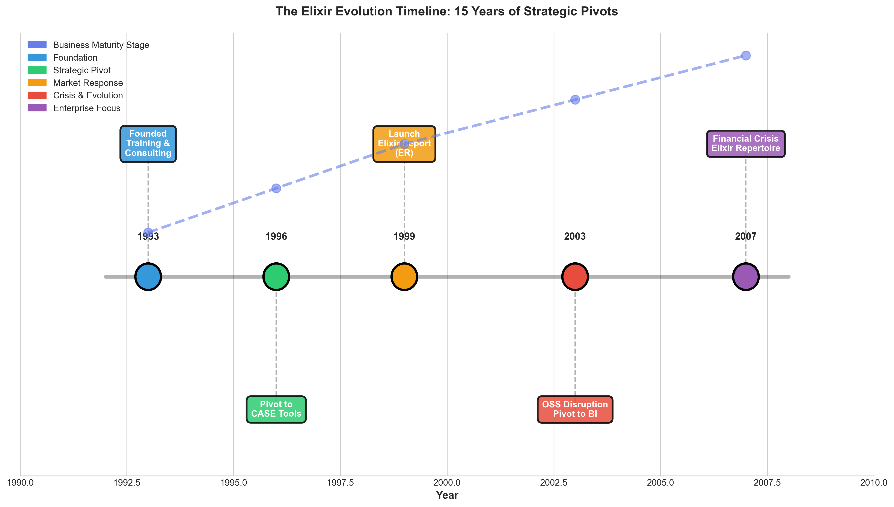
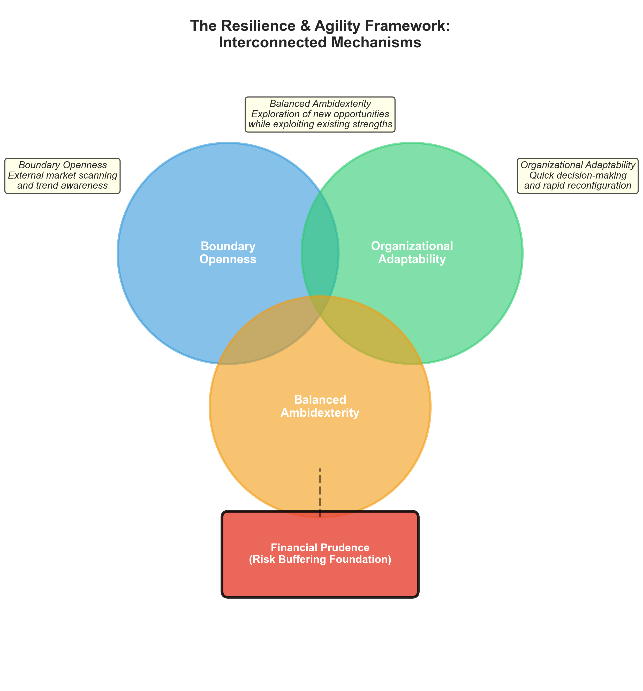
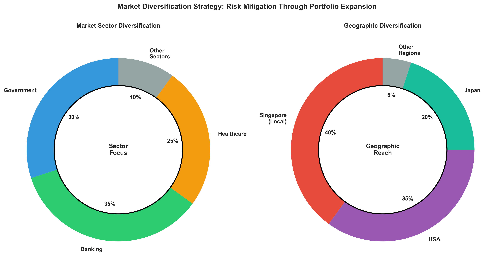
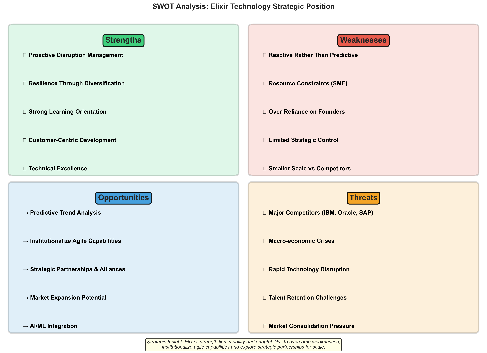
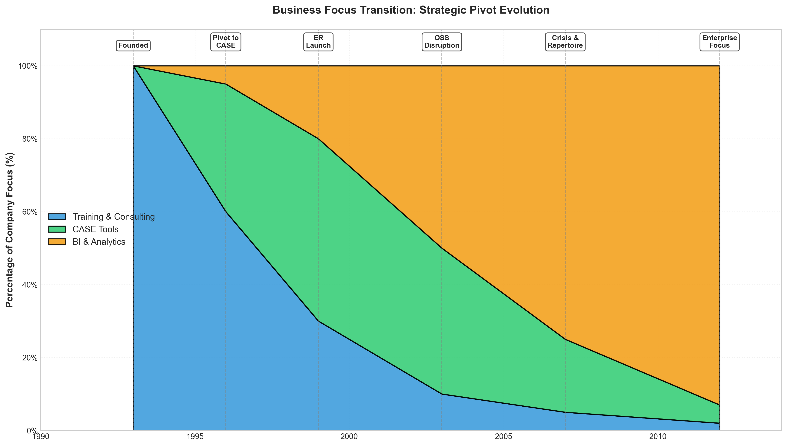

Executive Summary
Elixir Technology, founded in 1993 by Lau Shih Hor and Jonathan Priddey in Singapore, represents a compelling case study of how small and medium enterprises (SMEs) can leverage agile principles to navigate disruptive digital innovation (DDI). This report examines the factors contributing to Elixir's success, its agile adaptation strategies, resilience mechanisms, and provides a critical evaluation of its historical strategy.
Key Highlights
Founded Year
Business Pivots
Key Enablers
Word Analysis
1 Success Factors of Elixir Technology
What are some of the factors that contributed to the success of Elixir Technology?
🎯 Leadership and Vision
Lau's entrepreneurial mindset and willingness to pivot when necessary proved crucial. The company's humble origins of meeting in living rooms and MRT station benches demonstrated resourcefulness that persisted throughout its evolution. This lean startup mentality enabled the company to remain flexible and responsive to market conditions.
⚙️ Technical Competence
Priddey's technical expertise provided the foundation for product development, particularly in the transition to Computer-Aided Software Engineering (CASE) tools and later Business Intelligence (BI) solutions. The company's ability to capitalize on emerging programming environments, such as Java, showcased technical adaptability.
📊 Market Sensitivity
Elixir demonstrated exceptional sensitivity to market trends. When the training and consulting model proved commercially unviable due to programmers' independent nature, the company quickly pivoted to product development. This willingness to abandon failing strategies in favor of viable alternatives became a recurring pattern in Elixir's success.
💡 Innovation Investment
The company consistently invested in innovation, particularly evident in the evolution from Elixir Report (ER) in 1999 to Elixir Repertoire in 2007, incorporating business intelligence and analytics tools. This commitment to continuous product enhancement helped maintain competitive relevance.
2 Business Agility and Adaptation
Explain how Elixir Technology has been able to be agile in adapting their business over the years?
Elixir Technology exemplifies agile business transformation through iterative adaptation, continuous market scanning, and rapid pivoting capabilities.
Iterative Business Model Evolution
Rather than adhering to rigid long-term plans, Elixir operated in short iterative cycles. The company began as a training and consulting firm (1993), pivoted to CASE tools when the initial model failed, transitioned to BI reporting tools following the open-source software (OSS) movement disruption, and continuously evolved its product offerings. Each iteration incorporated customer feedback and market learning, fundamental to agile methodology.
Customer-Centric Development
Elixir's shift to BI tools despite initial skepticism from CIOs demonstrates customer-driven adaptation. The company identified genuine market needs such as enterprises requiring sophisticated reporting and analytics and developed solutions accordingly, aligning with the agile principle of "customer collaboration over contract negotiation".
Rapid Response to Disruption
When the OSS movement threatened CASE tools, Elixir didn't resist change but embraced it, pivoting to BI solutions. This responsiveness to changing requirements, even late in the product lifecycle, reflects core agile principles.
Cross-Functional Collaboration
The founding partnership itself represented cross-functional collaboration between business vision (Lau) and technical expertise (Priddey), enabling holistic decision-making that considered both market and technical feasibility.
3 Resilience and Agility Enablers
Explain what has enabled them to be so resilient and agile.
Elixir's resilience and agility were enabled by three interconnected mechanisms
🌐 Boundary Openness
The company maintained open boundaries with the external environment, continuously scanning for technological trends and market shifts. This external orientation allowed Elixir to anticipate disruptions rather than merely react to them. The founders' engagement with emerging programming environments and willingness to abandon comfortable business models exemplifies this openness.
🔄 Organizational Adaptability
Elixir developed internal capabilities for rapid reconfiguration. The company's small size as an SME actually facilitated quick decision-making and implementation compared to larger competitors. When the 2007 financial crisis hit and major clients like Walt Disney defected to IBM, Oracle, and SAP, Elixir could re-strategize rapidly without bureaucratic inertia.
⚖️ Balanced Ambidexterity
Despite resource constraints typical of SMEs, Elixir balanced exploitation of existing capabilities with exploration of new opportunities. The company maintained core BI competencies while simultaneously exploring adjacent markets and product enhancements, such as the transition from ER to Elixir Repertoire.
💰 Financial Prudence
The company maintained sufficient risk buffering to weather transitions, ensuring that short-term revenue generation supported long-term development ambitions. This financial discipline provided the runway necessary for agile experimentation.
4 Strategy Critique
Critique the strategy adopted by Elixir Technology throughout its history.
✅ Strategic Strengths
- Proactive Disruption Management: Elixir consistently disrupted itself before external forces could. The voluntary abandonment of CASE tools for BI solutions, despite initial success, prevented obsolescence. This aligns with the agile principle of "responding to change over following a plan".
- Resilience Through Diversification: The company's expansion across government, banking, healthcare, and international markets (particularly USA and Japan) reduced dependency on single market segments. This portfolio approach mitigated risks from sector-specific downturns.
- Learning Orientation: Each strategic pivot incorporated lessons from previous iterations. The failure of the training model informed subsequent product-focused strategies, demonstrating organizational learning capabilities.
⚠️ Strategic Limitations
- Reactive Rather Than Predictive: While Elixir responded effectively to disruptions, the strategy remained largely reactive. The company often pivoted in response to market threats rather than anticipating and shaping market evolution.
- Resource Constraint Vulnerability: As an SME, Elixir faced inherent resource limitations that constrained strategic options. The loss of major clients during the 2007 crisis nearly brought the company to its knees, suggesting that agility alone cannot compensate for resource disadvantages against larger competitors.
- Over-Reliance on Founding Team: The heavy dependence on Lau and Priddey's leadership created potential succession risks. Sustainable agility requires institutionalized capabilities rather than individual-dependent adaptation.
- Limited Strategic Control: The frequent pivots, while enabling survival, potentially prevented Elixir from achieving market dominance in any single category. The company survived multiple waves of change but may have sacrificed scale for adaptability.
💡 Recommendations for Enhanced Strategy
Moving forward, Elixir could benefit from incorporating more predictive elements into its agile strategy using trend analysis and scenario planning to anticipate disruptions before they occur. Additionally, institutionalizing agile capabilities throughout the organization, rather than concentrating them in leadership, would enhance sustainable resilience. Finally, exploring strategic partnerships or alliances could address resource constraints while maintaining agility.
📊 Visual Analysis & Strategic Insights
Comprehensive data visualizations supporting the case study analysis
The Elixir Evolution Timeline
15 years of strategic pivots and product evolution (1993-2012)
Shows Elixir's four major business model transitions: Training → CASE Tools → BI Solutions → Enterprise Analytics

The Resilience & Agility Framework
Three interconnected mechanisms anchored by financial prudence
Boundary Openness, Organizational Adaptability, and Balanced Ambidexterity working together with Financial Prudence as the foundation

Market Diversification Strategy
Risk mitigation through portfolio expansion
Sector diversification: Government, Banking, Healthcare. Geographic reach: Singapore, USA, Japan

SWOT Analysis Matrix
Strategic position summary and critical evaluation
Comprehensive view of strengths, weaknesses, opportunities, and threats

Business Focus Transition Over Time
How Elixir's core business model shifted strategically
Percentage of company focus over time: Training & Consulting → CASE Tools → BI & Analytics (1993-2012)

Conclusion
Elixir Technology's journey from startup to leading Singaporean IT firm demonstrates that agility is not merely a project management methodology but a fundamental business strategy for surviving in hypercompetitive digital environments. The company's success validates the applicability of agile principles—iterative development, customer collaboration, responsiveness to change, and cross-functional teamwork—to business-level transformation.
However, the case also illustrates the limitations of pure agility without predictive strategic planning and adequate resource buffers. For SMEs navigating disruptive digital innovation, Elixir provides a valuable template for combining entrepreneurial vision, technical excellence, and adaptive capabilities, while highlighting the need to institutionalize these capabilities for long-term sustainability.
References
- Chan, C. M. L., Teoh, S. Y., Yeow, A., & Pan, G. (2019). Agility in responding to disruptive digital innovation: Case study of an SME. Information Systems Journal, 29(2), 436-455.
- Teoh, S. Y., & Chan, C. M. L. (2020). Thriving on waves of change: Case study of an agile digital business in Singapore. Journal of Information Technology Teaching Cases, 10(2), 48-53.
- Agile Alliance. (2001). Manifesto for Agile Software Development.
- Fruition Group. (2025). Agile Methodology – Revolutionising Business Transformation.
- RocketReach. (2025). Elixir Technology Company Profile.